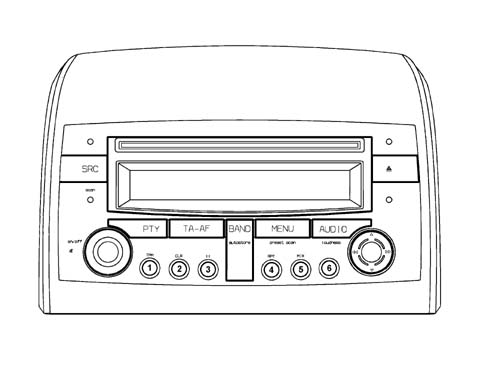
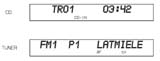
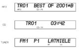
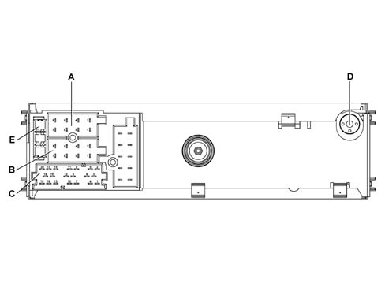
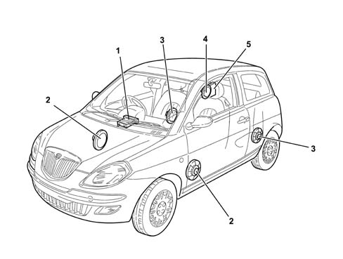
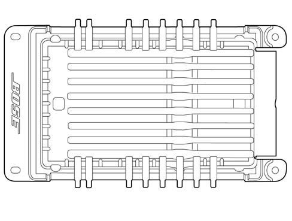
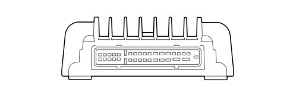
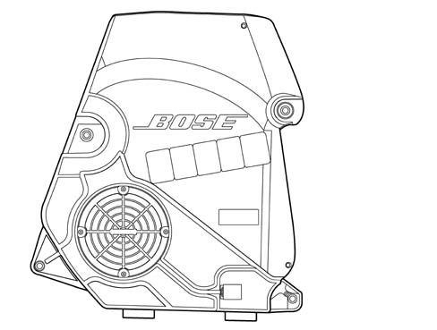

Introduction - ACCESSORIES
- Path
- Descriptions > 55 ELECTRICAL EQUIPMENT > 5570 ACCESSORIES > Introduction - ACCESSORIES
- Kind
- system description
- Applies to
- all engines; all production periods
- Interactive page
- https://sloeber94.github.io/elrnDB-lYpsln/en/#/2429858
Applies to: all engines; all production periods
Specifications
Applies to: all engines; all production periods
CD PLAYER
Dimensions: 1 DIN box with 2 DIN front panel
Modules included:
- Radio
- Audio CD player + CD ROM with MP3 (if present)
- LCD graphic display
- External CD CHANGER management (if fitted).

Applies to: all engines; all production periods
CD PLAYER
Examples showing the disply of the various radio CD functions are illustrated below:

Applies to: all engines; all production periods
CD PLAYER
Examples showing the disply of the various radio CD with MP3 functions are illustrated below:

Applies to: all engines; all production periods
OPERATION
The table below describes all the functions that can be activated for both models.
BUTTON FUNCTIONS | ||||||
|---|---|---|---|---|---|---|
Button N° | Symbol | Description of functions | Tuner | CD/CD-MP3 Player | CD-Changer | |
Press Button Briefly | Press Button for longer | |||||
T01 | relay | 1.Recall preset 2.TPM On/Off 3.PauseOn/Off 4.Repeat On/Off 5.Mix On/Off | 1.Programme preset 2. TPM memorizing/reset 3.PauseOn/Off 4.Repeat On/Off 5.Mix On/Off | 1.Recall preset 1.Programme preset | Button 1. TPM On/Off TPM Memorizing Button 2 TPM button reset 3.PauseOn/Off Tasto 4.Repeat On/Off Tasto 5.Mix On/Off | 3.PauseOn/Off 4.Repeat On/Off 5.Mix On/Off |
T02 | relay | |||||
T03 | 3 | |||||
T04 | 4 | |||||
T05 | 5 | |||||
T06 | 6 | |||||
T07 | PTY | PTY On/Off | Display Prog. type | 1.PTY On/Off 2. Prog. display | PTY On/Off | PTY On/Off |
T08 | TA-AF | TA On/Off | AF On/Off | 1.TA On/Off 2.AF On/Off | 1.TA On/Off 2.AF On/Off | 1.TA On/Off 2.AF On/Off |
T09 | BAND | Radio band selection | Autostore FMT | 1. Radio band selection 2.Autostore FMT | 1. Missing 2.Autostore | 1. Missing 2.Autostore |
T10 | MENU | Access to menu | Scan preselection | 1 Access to menu 2 Scan preselection | Access to menu | Access to menu |
T11 | AUDIO | Selection Bass,Treble Balance, Fader | Loudness On/Off | 1. Sel. Bass,Treble Balance, Fader 2 Loudness On/Off | 1. Sel. Bass,Treble Balance, Fader 2 Loudness On/Off | 1. Sel. Bass,Treble Balance, Fader 2 Loudness On/Off |
T12 | ◄◄ | 1. Man. search Backward 2. Sel. prog. previous PYT,TP,AF 3. Start of track/sel. Previous track | 1. Fast backwards manual search 2. Fast sel. prog. previous PTY,AF,TP 3 Start of track/sel. Rapid previous track | 1. Man. search Backward 2. Sel. prog. previous PYT,TP,AF | 1. Start of track/selection of previous track 2. Fast selection of previous track | 1. Start of track/selection of previous track 2. Fast selection of previous track |
T13 | ▼ | 1. Automatic search Backward 2. Sel. CD backward | 1. Automatic search Continuous backward 2. Sel. CD continuous backward | 1. Automatic search Backward 2. Automatic search Continuous backward | 1. Sel. Previous folder 2. Continuous selection previous folder ____: (CD-MP3 ONLY) | 1. Selection of previous CD 2. Continuous selection of previous CD |
T14 | ►► | 1. Man. search forward 2. Sel. prog. next PYT,TP,AF 3. Sel. next track | 1. Manual fast forward search 2. Fast sel. prog. next PTY,AF,TP 3 Start of track/sel. next track fast | 1. Man. search forward 2. Sel. prog. next PYT,TP,AF | 1. Start of track/sel. next track 2. Fast sel. of next track | 1. Sel. of next track 2. Fast sel. next track |
T15 | ▲ | 1. Automatic search forward 2. Sel. CD forward | 1. Automatic search continuous forward 2. Sel. CD continuous forward | 1. Automatic search Forward 2. Automatic search continuous forward | 1. Sel. next folder 2. Fast sel. next folder ____: (CD-MP3 ONLY) | 1. Sel. next CD 2. Continuous sel. next CD |
T16 | SRC | In sequence: Radio CD, CDC | Source scan | 1. In sequence: Radio, CD, CDC 2.FM/AM scan | 1. In sequence: Radio, CD, CDC 2.FM/AM scan | 1. In sequence: Radio, CD, CDC 2.FM/AM scan |
T17 | ▲ | CD eject | CD eject | CD eject | CD eject | CD eject |
R01 | ON/OFF | 1. Increase/decrease volume step by step 2.Mute On/Off | 1. Rapid volume increase/decrease 2.radio On/Off | 1. Increase/decrease volume step by step 2 . Rapid volume increase/decrease | 1. Increase/decrease volume step by step 2 . Rapid volume increase/decrease | 1. Increase/decrease volume step by step 2 . Rapid volume increase/decrease |
The techincal specifications valid for both models are listed below.
ELECTRICAL/TECHNICAL SPECIFICATIONS AT 23°C ±5°C | |
|---|---|
Power Section | |
Voltage operating range | 10 -16 V |
Nominal supply voltage | 13.5 V |
Minimum memory supply voltage | 5 V |
Operating voltage limit | 18 V Max 1 hour 24 V Max 1 min |
Maximum current absorbed | 10 A |
Continuous stand-by current absorbed | 2 mA |
Stand-by current absorbed 10 secs are first connection | 30 mA |
Number of output channels | 4 |
Nominal output power (RMS) with 10% THD | > 14 W |
RADIO RECEIVER | |
Type of tuner | Quartz PLL |
Band limits | FM 87.5 - 108 MHz MW 531 - 1602 kHz LW 153 - 279 kHz |
Intermediate frequency | FM 10.6875 MHz AM 10.6875 MHz |
RDS functions | AF (alternative frequency) PI (program identification) PS (program service TP (traffic program) TA (traffic announcement) EON (enhanced other networks) REG (regional program) PTY (program type) |
Aerial signal nominal input impedance | 150 O |
Tuning reception mode | Manual / automatic : Up - Down |
Programme station tuning | N° 30 (12 FM; 6 MW; 6 LW; 6 FMT) |
Automatic scanning of pre-memorized transmitters | Yes |
CD PLAYER | |
Number of channels | 4 |
Signal / noise ratio | > 80 dB |
Channel separation | 1 kHz >= 70dB 10 kHz >= 50 dB |
OTHER FUNCTIONS | |
CD-Changer control | Yes |
Remote control preparation | Yes |
Hands free telephone preparation | Yes |
Automatic volume adjustement dependent on the speed | Yes |
Applies to: all engines; all production periods
Anti-theft code
The radio is installed during Production and connected t to the CAN to establish communication with the Body Computer. The Body Computerstores an antitheft key known as the Exchange Code.
At each subsequent key on (or if the battery is disconnected), an automatic authenticationprocedure is repeated. The radio display shows the message CANCHECK: if the Exchange Code check is postive, the system begins to operate . If the comparison codes are not the same, the display shows a message that asks the user to entera manual code (Master Code - 4-figure code from 1111 to 6666) shown on the radio code card.
Applies to: all engines; all production periods
Operation at Key Off
Applies to: all engines; all production periods
Connectors
Rear view:

A - Supply connector B - Speaker output connector C - Functions connector D - Aerial E - 10 A fuse
Applies to: all engines; all production periods
Connectors
Connector A Pin Out:
Pin | Operation |
|---|---|
A1 | Can-Bus B |
A2 | Return from amplifier (NC) |
A3 | Can-Bus A |
A4 | Direct supply |
A5 | Aerial supply |
A6 | Lit up with side lights on |
A7 | N.C. |
A8 | Earth |
Connector B pinout:
Pin | Operation |
|---|---|
B1 | Right rear speaker + |
B2 | Right rear speaker - |
B3 | Right front speaker + |
B4 | Right front speaker - |
B5 | Left front speaker + |
B6 | Left front speaker - |
B7 | Left rear speaker + |
B8 | Left rear speaker - |
Connector C:
Pin | Operation |
|---|---|
C1 | NC |
C2 | NC |
C3 | NC |
C4 | NC |
C5 | NC |
C6 | Positive signal for amplifier enablement |
D7 | Audio phone to + (NC) |
D8 | Audio phone to - (NC) |
D9 | Phone mute (NC) |
D10 | (N.C.) |
D11 | (N.C.) |
D12 | Mute |
E13 | CDC data IN |
E14 | CDC data OUT |
E15 | Permanent power supply for CDC |
E16 | Positive signal for supply enablement CDC |
E17 | CDC data GND |
E18 | CDC audio GND |
E19 | Input L for CDC |
E20 | Input R for CDC |
Applies to: all engines; all production periods; only with equipment: BOSE System
Specifications
A 'Bose' HI FI system with special speakers and an outside amplifier is available on request.
The system has been developed ad hoc for the vehicle: the acoustic properties of the passenger compartment have been carefully studied so that the amplifier and the speakers are perfectly suited to the vehicle: the sound is excellent throughout the passenger compartment.
In addition, the system blends in perfectly with the aesthetics of the vehicle, without taking up extra space.
The system is installed in the vehicle directly in production, without any operations afterwards: the cables are incorporated in the vehicle wiring.
It is therefore advisable not to modify the original system in any way (e.g. graphic equalizers, additional sub-woofers, extra amplifiers).
In addition, the system components (amplifier and speakers) should not be repaired individually, but can only be replaced with new components.
Applies to: all engines; all production periods; only with equipment: BOSE System
Performance
The Bose system guarantees the highest quality sound, with crystal clear high notes and deep, rich low tones.
With the following specifications:
- Volume compensation, through the 'active' Bose equalizing
- High/low tone control, from + 6dB to - 12 dB
- Fader control, through the Bose 'spatial' fader
Applies to: all engines; all production periods; only with equipment: BOSE System
COMPOSITION
Unlike the system fitted as standard, the Bose systme includes:
- front speakers specific coaxial type and rear mid-woofer type
- rear sub-woofer speaker in the special bassbox
- high power amplifier
The other components (radio, aerial, etc.) are the same as those on the system fitted as standard.
Applies to: all engines; all production periods; only with equipment: BOSE System
Location
The diagram below illustrates the location of the components.

1 - Radio 2 - Front door speakers 3 - Rear speakers 4 - Rear sub-woofer speaker 5 - Amplifier
Applies to: all engines; all production periods; only with equipment: BOSE System
SPECIFCATIONS
Bose amplifier:

Applies to: all engines; all production periods; only with equipment: BOSE System
SPECIFCATIONS
This is a 6 channel, hi-fi amplifier with 150W power with 6 low distorstion linear digital amplifiers.
The amplifier has 4 stereo channels for the speakers in the front and rear doors and two channels for the dual mobile coil sub-woofer in the rear bassbox.
The amplifier is equipped with a built in equalizer and compressor.
The high resolution equalizer is specially calibrated in the vehicle passenger compartment because it takes into account the vehicle absorption and reflection surfaces (seats, windows, dashboard, door panels) and the position of the speakers and the passengers.
The 'one stage' technology allows high power with compact dimensions and reduced heat emissions compared with conventional linear amplifiers.
The amplifier is fitted with:
- an integrated signal processor, which actively adapts the bass;
- an active equalizer, with automatic electronic balancing of all outputs
- an integrated compressor which minimizes distortions

Applies to: all engines; all production periods; only with equipment: BOSE System
SPECIFCATIONS
Pinout
Pin | Operation |
|---|---|
relay | Battery power supply |
relay | +31 Earth |
3 | Woofer 2 positive |
4 | Rear Left negative |
5 | Rear right positive |
6 | Enablement from radio |
7 | Front left negative command |
8 | Front right negative command |
9 | Rear left negative command |
10 | Rear right negative command |
11. | Woofer 1 positive |
12. | Woofer 1 negative |
13 | n.c. |
14 | n.c. |
15 | Woofer 2 negative |
16 | Rear left positive |
17 | Rear right negative |
18 | n.c. |
19 | Front left positive command |
20 | Front right positive command |
21 | Rear left positive command |
22 | Rear right positive command |
23 | n.c. |
24 | n.c. |
25 | n.c. |
26 | Front right negative |
27 | Front right positive |
28 | n.c. |
29 | Microphone positive (NC) |
30 | Microphone negative (NC) |
31 | Front left positive |
32 | Front Left negative |
Applies to: all engines; all production periods; only with equipment: BOSE System
Specifications
This is a high fidelity dual coil woofer speaker with a special bass box incorporated which diffuses the sound in an optimum manner preventing vibrations and interference.

Applies to: all engines; all production periods; only with equipment: BOSE System
Specifications
Electrical characteristics | |
|---|---|
Band (at 10 dB) | 30 - 200 Hz |
Resonance frequency | 60 Hz |
Nominal impedance | 2 x 2 ohm |
RMS power | 2 x 25 Watt |
Crossover frequency | About 150 Hz |